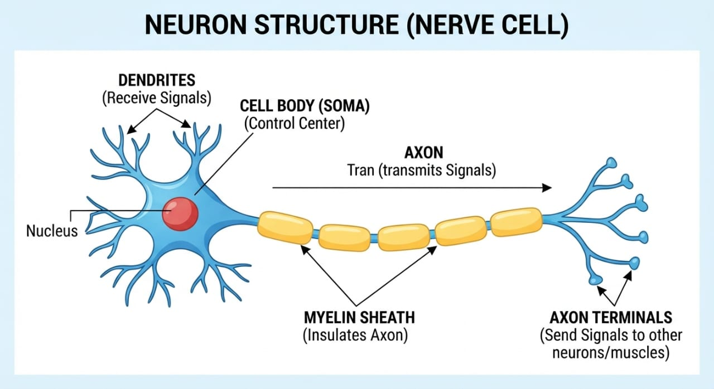

What Is a Cell
Before any organ system makes sense, the cell has to. Every structure covered elsewhere in this subject — muscle fibre, villus, alveolus — is a variation on the same basic unit.
DefCell
The basic structural and functional unit of life.
Structural unit — the whole body is built from cells. Some organisms are unicellular (bacteria, amoeba); humans are multicellular, made of many different cell types.
Functional unit — cells carry out the basic activities that keep an organism alive: metabolism, growth, response, reproduction.
Somatic vs germ cells
- Somatic — ordinary body cells: muscle, skin, liver, nerve
- Germ — reproductive cells: sperm (male), ovum (female)
Prokaryotic vs eukaryotic
- Prokaryotic — no true membrane-bound nucleus, e.g. bacteria
- Eukaryotic — true nucleus + membrane-bound organelles. Human cells are eukaryotic.

Think of the body as a huge city, and each cell as one house or small factory that keeps the city running. A typical human cell has three major working parts: the cell membrane (boundary/security gate), the cytoplasm (factory floor), and the nucleus (manager's office). Everything else in this topic is really just zooming into one of those three.
Cell Membrane
The outer boundary of the cell — and the thing that decides what's allowed in or out.
Imagine a security gate at the entrance to a house: family members can come and go, but the gate doesn't let everyone and everything through. The cell membrane works the same way — it's selectively permeable, meaning it chooses what enters and leaves the cell rather than letting substances pass freely.
Structurally, it's built from a phospholipid bilayer — two layers of phospholipid molecules, each with a water-loving (hydrophilic) head and a water-avoiding (hydrophobic) tail. The heads face outward toward the watery environment on both sides; the tails face each other in the middle. Proteins, cholesterol, and carbohydrates are embedded in this layer too, and it's mostly those embedded proteins that do the actual work of controlling what crosses.
The selectively permeable boundary that separates the inside of a cell from its surroundings.
Phospholipid bilayer with embedded proteins, cholesterol, and carbohydrates.
Protects the cell, separates inside from outside, controls what enters/leaves, helps maintain the internal environment, receives signals from outside.
Remember: cell membrane → transport → internal environment → homeostasis (see section 05).
Your class notes don't link the cell membrane specifically to a named asana — this topic is foundational biology, not a clinical/disorder topic, so the Section C "yoga connection" style used elsewhere in this subject doesn't apply directly here. What does carry over is the general theme picked up again in section 05: every regulatory practice in yoga (breath control, relaxation) ultimately works by influencing processes that happen at the level of individual cells, membranes included.
Cytoplasm & Organelles
The factory floor, and every machine on it.
The cytoplasm is everything between the membrane and the nucleus — the working area of the cell. Its fluid portion (cytosol) plus everything suspended in it (organelles, proteins, ions) together make up the cytoplasm. Most of the cell's actual chemical work happens here.
Picture the whole cell as a small, highly organised factory, and each organelle as a department with one job:
Two easy memory hooks from the notes: "Rough = Ribosomes = Protein" and "Smooth ER = lipid/steroid + detoxification."
| Organelle | Main job |
|---|---|
| Mitochondria | ATP production — aerobic cellular respiration |
| Ribosomes | Protein synthesis (free in cytoplasm, or attached to rough ER) |
| Rough ER | Protein synthesis, processing, transport (has ribosomes attached) |
| Smooth ER | Lipid/steroid synthesis, detoxification, calcium storage |
| Golgi apparatus | Modifies, sorts and packages proteins; forms lysosomes |
| Lysosomes | Digestive enzymes — break down debris and damaged components |
| Centrosome / centrioles | Organise microtubules and the spindle during cell division |
| Vacuoles | Storage of water, ions, other substances |
| Nissl bodies | Found in nerve cells; rough ER/ribosomes for neuron protein synthesis |
| Secretory granules | Hold substances ready for release from the cell |
| Cytoskeleton | Shape, internal support, movement (microfilaments, intermediate filaments, microtubules) |
Cytosol vs cytoplasm
Cytosol = the fluid portion only. Cytoplasm = cytosol + organelles and everything else outside the nucleus.
As with the membrane, your notes don't tie individual organelles to specific asanas — this is groundwork for later, more clinical topics (e.g. why muscle fibres are unusually rich in mitochondria, covered in the Muscular System topic).
Nucleus & DNA
Where the instructions are kept, and how "instructions" turn into "chromosomes."
The nucleus is the manager's office of the cell — it holds the instructions (DNA) and tells the rest of the factory what to do. It stores genetic information, controls cellular activity, regulates which genes get switched on, and is central to growth and division.
Humans normally have 46 chromosomes, arranged as 23 pairs. Sex chromosomes: female → XX, male → XY.
The nucleus is the control centre of the cell, containing DNA, chromatin and the nucleolus.
DNA + proteins = chromatin (normal state); condensed chromatin = chromosomes (division). Genes are functional sections of DNA.
Stores genetic information, controls cellular activities, regulates gene expression, directs growth and division.
No asana-level connection stated in your notes for this section — it's pure structural biology, feeding forward into topics like tissue and organ formation rather than into a specific practice.
Membrane Transport
How substances actually cross that selective boundary — six different ways, split into "costs no energy" and "costs energy."
Everything here splits into two families: passive transport (no ATP needed — substances move "downhill," from high to low concentration) and active transport (needs ATP — the cell pushes something "uphill," from low to high concentration).
Endocytosis (bringing something large inside — phagocytosis "cell eating," pinocytosis "cell drinking," receptor-mediated) and exocytosis (sending something out, e.g. hormone or neurotransmitter release) are the two bulk-transport routes, and both need ATP too.
| Process | Direction | ATP? | Main idea |
|---|---|---|---|
| Simple diffusion | High → Low | No | Direct movement |
| Facilitated diffusion | High → Low | No | Uses a membrane protein |
| Osmosis | Toward higher solute conc. | No | Movement of water |
| Active transport | Low → High | Yes | Uses energy (e.g. Na⁺/K⁺ pump) |
| Endocytosis | Into the cell | Yes | Brings large material in |
| Exocytosis | Out of the cell | Yes | Sends material out |
Remember: passive = downhill = no ATP. Active = uphill = ATP.
Your notes don't state a specific asana link for membrane transport. The one connection worth flagging honestly as inferred, not stated: pranayama increases how much oxygen is available in the blood for simple diffusion into cells, and the sodium–potassium pump is exactly what keeps neurons firing during meditation and asana practice — but neither claim is written in your class notes as a Section C answer, so don't present it as one.
Homeostasis & Feedback
Why all of the above matters: keeping the internal environment stable, and the two feedback patterns the body uses to do it.
Homeostasis is the body keeping its internal conditions within a suitable, fairly narrow range, no matter what's happening outside. If it's very hot outside, your body doesn't want its internal temperature to climb uncontrollably — so you sweat, sweat evaporates, heat is lost, temperature comes back down. That whole loop is homeostasis in action. The body regulates temperature, blood glucose, water balance, electrolytes, blood pressure, blood pH, and O₂/CO₂ levels this way.
Homeostasis is the maintenance of a relatively stable internal environment despite changes outside the body.
Keeps cells working within the narrow conditions they need — achieved mainly through negative feedback, occasionally positive feedback.
| Negative feedback | Positive feedback |
|---|---|
| Opposes the change | Strengthens the change |
| Maintains stability | Drives a process to completion |
| Very common | Less common |
| e.g. temperature, blood glucose regulation | e.g. childbirth, blood clotting |
This is the one place in the Cell topic where a yoga connection is genuinely reasonable to state, because homeostasis is itself the physiological version of what a lot of yogic self-regulation is aiming at — but your notes don't name specific asanas here, so keep this general rather than presenting it as an exam-ready Section C answer.
Source: class notes — Cell Study Notes (PDF).